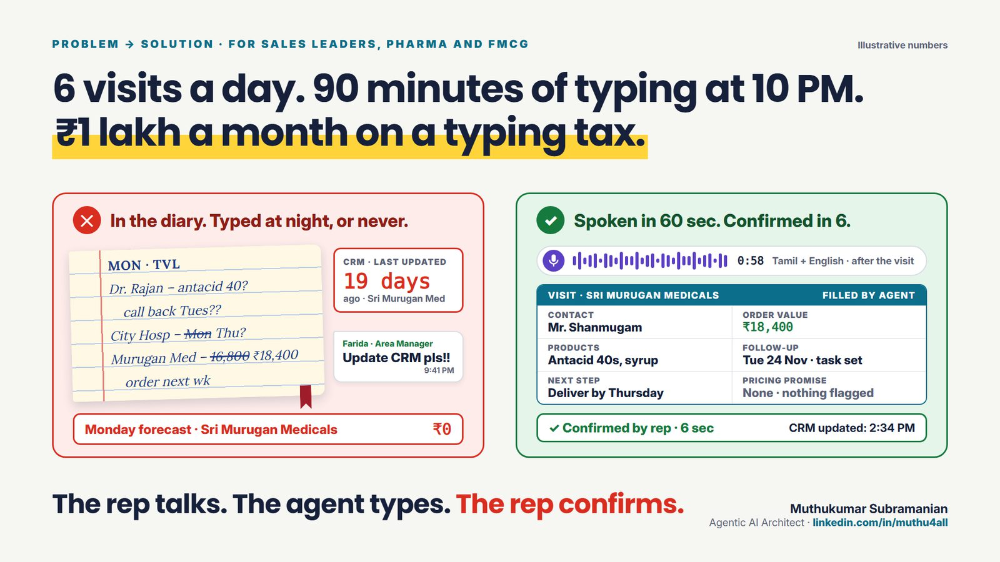
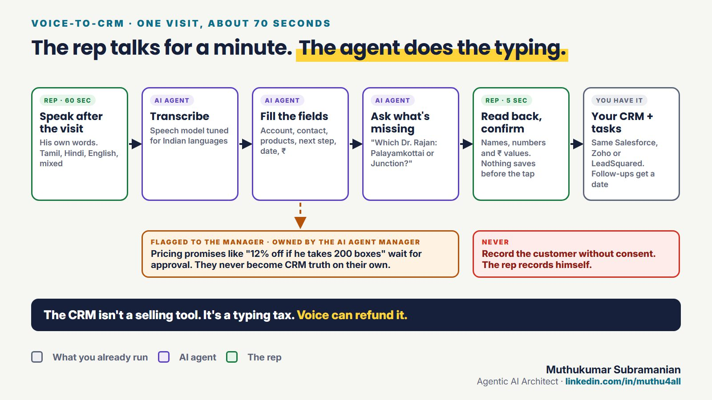
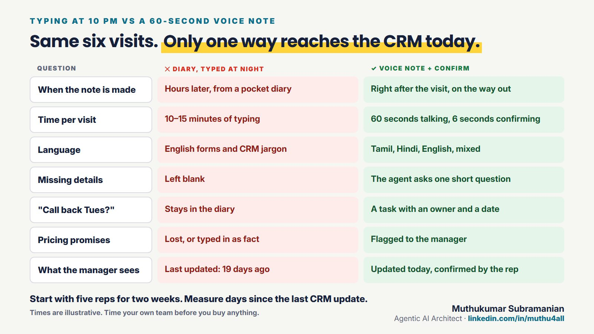

Your Sales Reps Spend ₹1 Lakh a Month Typing Into the CRM. An AI Agent Can Do It by Voice.
By Muthukumar Subramanian · Agentic AI Architect

It's 10:15 PM in Tirunelveli. Saravanan, a medical rep, has a pocket diary open next to a laptop. Six visits today: three doctors, a hospital and two chemists. The diary says things like "Dr. Rajan – antacid 40 strips? call back Tues?" with one line crossed out twice.
His phone buzzes. It's Farida, his area manager: "Update CRM pls!! Review at 9 tomorrow."
He types in three visits and falls asleep on the fourth. The chemist who promised an ₹18,400 order next week never makes it into the system. On Monday the forecast shows ₹0 from that account, and Farida is chasing him on WhatsApp again. (Saravanan, Farida and every number here are illustrative.)
The CRM isn't a selling tool. For the rep, it's a typing tax. Voice can refund it.
The problem: the best data is in a diary nobody can search
Salesforce's State of Sales survey (5th edition, 7,775 sales professionals) found reps estimate they spend just 28% of their week actually selling. Deal management and data entry eat much of the rest.
Now do the sum for one small team. Twelve reps on about ₹50,000 a month each. If each loses roughly 90 minutes a day to CRM typing and "pls update" chases, that's about ₹1 lakh a month in salary spent on data entry. Illustrative, and probably low.
The money is only half of it. The other half is what happens when reps don't type:
→ The CRM goes stale. "Last updated: 19 days ago" on a key account is normal.
→ Forecasts become guesses. The manager forecasts from WhatsApp messages and memory.
→ Follow-ups die in the diary. "Call back Tues?" has no owner, no date and no reminder.
Pharma reps, FMCG salesmen, insurance agents and equipment sellers all live this. Salesforce, Zoho CRM or LeadSquared, the CRM was built for a desk. The rep is on a bike.

The solution: the rep talks, the agent types, the rep confirms
After each visit, before he starts the bike, Saravanan speaks for about a minute, in Tamil and English, the way he'd tell Farida on the phone.
→ 1. Transcribe the way reps talk. Tamil, Hindi and English in one sentence is normal, not an error. "Rajan sir okay sonnar, antacid 40 strips, next Tuesday confirm pannuvaar."
→ 2. Fill the right fields. Account, contact, products discussed, next step, follow-up date, order value. Into the CRM the company already has.
→ 3. Ask only for what's missing. "Which Dr. Rajan: Palayamkottai or Junction?" One question, not a form.
→ 4. A five-second confirm screen. Names, numbers and order values are read back. Nothing saves until the rep taps confirm.
→ 5. Create the follow-ups. "Call back Tuesday" becomes a task with his name and a date. On 7 Nov I wrote about agents that write down tasks nobody does. Here, the task has an owner from the first second.
→ 6. Flag the sensitive notes. "I told him 12% off if he takes 200 boxes" doesn't quietly become CRM truth. It goes to Farida for approval.
One guardrail matters more than the rest: the rep records himself, not the customer. A summary after the visit, never a hidden recording of the doctor or the shop owner. Recording a customer needs their consent, and voices are personal data under India's DPDP Act.
Let the rep talk. Let the agent type. Let the rep sign off.

👉 [GIF: B-day20-4-in-article-rep-day.gif]
Caption: Six visits, two ways. In one lane the notes pile up for 10 PM. In the other, each visit ends with a voice note and the CRM fills in as the day goes. All details illustrative.
This isn't science fiction any more
The big vendors are already moving here. Microsoft's Sales agent on mobile lets reps dictate notes into CRM records and update opportunity fields by voice, and its documentation says confirmation is required before any update saves. Salesforce has added an in-person meeting assistant and post-meeting voice notes to its mobile app. Zoho CRM's Zia takes voice commands to add notes and create records, and LeadSquared's field app has speech-to-text for notes. For Indian languages, Sarvam's Saaras handles code-mixed speech, and AI4Bharat's open IndicConformer models cover all 22 scheduled languages.
Check what's live in your edition before you plan around it. Several are new or in preview, and most were built English-first. On 8 Nov I wrote that your next crore customers don't speak English to AI. Your field reps don't either. Test Tanglish on day one, not after the rollout.
The people who make it work
Someone has to learn how reps actually talk. That's the job of a forward deployed engineer (FDE): an engineer who works inside the customer's team and ships on their real systems. Here, that means riding along with reps for a week and learning that "the green strip" means one SKU, that "Junction doctor" is a real account, and that nobody says "opportunity stage".
Then someone has to own what the agent may write. Some companies call that person an AI Agent Manager. They review the flagged pricing promises, check 20 random voice notes against the saved records every week, and decide which fields the agent can never touch. The titles are still settling. The work isn't new.
The hard parts
→ A wrong account is worse than no note. Two Dr. Rajans, two Sri Murugan Medicals. Match on location and the visit plan, and ask when unsure.
→ Product slang. Reps use short names, old names and local names. Without a SKU dictionary, the agent guesses.
→ Noise. Traffic, a chemist counter, a hospital corridor. Speak after you've walked out, and test on real recordings.
→ Confirm fatigue. If reps tap "confirm" without reading, the read-back is theatre. Show only the numbers that matter, big.
→ Surveillance creep. If voice notes become a way to track every minute, reps will stop talking. Use them for the record, not for policing.
→ It's not proof of a visit. A voice note says what the rep said, not that he was there. Don't pretend otherwise.
The opportunity
→ For sales heads: pick five reps, run voice notes for two weeks, and compare two numbers: days since last CRM update, and how many follow-ups actually happened.
→ For pharma and FMCG companies and distributors: build the SKU dictionary and the vocabulary list now. It's the asset that makes any voice tool work.
→ For founders and IT services firms: a voice layer in Indian languages on the CRMs people already pay for, with confirm screens, audit trails and FDEs who ride along. Nobody wants a new CRM. Every rep wants their evenings back.
Your turn 👇
Your CRM: a selling tool or a typing tax? Pick one.
Tag the sales manager who still sends "Update CRM pls!!" at 9 PM.